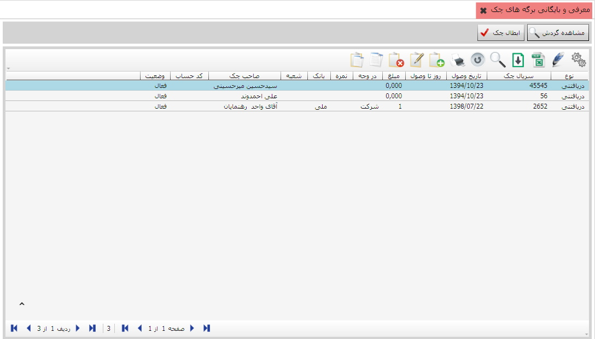
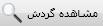
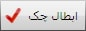
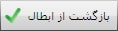
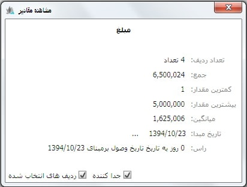

معرفی و بایگانی برگه های چک
در این بخش می توانید چکهای دریافتی و پرداختی خود را به سیستم معرفی کنید برای این کار
از بخش «اطلاعات چک ها» گزینه «معرفی و بایگانی برگه های چک»
را انتخاب کنید تا صفحه مربوط به آن به شکل زیر نمایان شود:

در این صفحه شما قادر خواهید بود تمام برگه های چک را اعم از نوع
دریافتنی و پرداختنی همراه با مشخصات به صورت یک لیست مشاهده کنید.
همچنین می توانید با انتخاب هر یک از چک ها و زدن دکمه

، گردش آن چک را نیز در سیستم مشاهده
نمایید.
با استفاده از کلید  می توانید چک هایی که
فاقد گردش هستند را ابطال نمایید و در صورت نیاز با استفاده از کلید 
چکهای مورد نظر را از ابطال خارج نمایید،
در صورتی که نیاز داشته باشید اطلاعات ثبت شده برای هر چک
را تغییر دهید، از نوار ابزار موجود در بالای صفحه گزینه ویرایش
را انتخاب کنید و اصلاحات لازم را
انجام دهید، باید توجه داشته باشید که اگر چک انتخاب شده دارای گردش
باشد امکان ویرایش مبلغ چک وجود ندارد.
علاوه بر این شما می توانید در همین قسمت با استفاده از گزینه اضافه
 یک برگه چک جدید تعریف کنید بدون
اینکه سند خزانه برای آن صادر نمایید،
یعنی شما در سیستم فقط مشخصات چک را وارد می کنید که در مراحل بعد
می توانید برای آن برگه چک سند خزانه (دریافت یا پرداخت) صادر کنید.
یک برگه چک جدید تعریف کنید بدون
اینکه سند خزانه برای آن صادر نمایید،
یعنی شما در سیستم فقط مشخصات چک را وارد می کنید که در مراحل بعد
می توانید برای آن برگه چک سند خزانه (دریافت یا پرداخت) صادر کنید.
تمام چک هایی که شما از طریق سند خزانه دریافت یا پرداخت
می کنید باید در این قسمت بایگانی شوند. اگر زمانی تمام سندهای خزانه
مرتبط با یک چک حذف شود، یعنی آن چک فاقد گردش شود، شما می توانید
اطلاعات مربوط به آن چک را همچنان در این قسمت داشته باشید و در
صورت تمایل می توانید مشخصات آن را از این قسمت با استفاده از آیکن
 حذف کنید.
حذف کنید.
 باید توجه داشته باشید
که هر برگه چکی که دارای گردش
باشد از این قسمت قابل حذف نیست
و ابتدا باید گردش های آن حذف شود.
باید توجه داشته باشید
که هر برگه چکی که دارای گردش
باشد از این قسمت قابل حذف نیست
و ابتدا باید گردش های آن حذف شود.
 گاهی لازم است زمانی که سند دریافت یا
پرداخت چکی را صادر می کنید بتوانید اطلاعات چک را در همان زمان صدور سند تعریف نمایید.
برای همین منظور در نرم افزار سایان، در صفحه صدور سند خزانه مربوط به
دریافت و پرداخت چک امکان دسترسی به صفحه «معرفی و بایگانی برگه های چک» وجود دارد.
گاهی لازم است زمانی که سند دریافت یا
پرداخت چکی را صادر می کنید بتوانید اطلاعات چک را در همان زمان صدور سند تعریف نمایید.
برای همین منظور در نرم افزار سایان، در صفحه صدور سند خزانه مربوط به
دریافت و پرداخت چک امکان دسترسی به صفحه «معرفی و بایگانی برگه های چک» وجود دارد.
راس گیری چک
در نرم افزار سایان امکان راس گیری چک های دریافتنی قرار داده شده است.
برای راس گیری چک ها، در لیست چک های دریافتنی، آن دسته
از چک هایی را که نیاز دارید برای آن ها
راس گیری انجام شود را انتخاب کنید و سپس کلید Ctrl را گرفته و روی فیلد مبلغ کلیک کنید،
با این کار پنجره
زیر نمایش داده می شود:

همان طور که در شکل بالا مشاهده می کنید
در شکل بالا می توانید جمع مبالغ چک های انتخاب شده، کمترین مقدار و
بیشترین مقدار مبالغ چک و اطلاعات مربوط به راس گیری چک را مشاهده نمایید.
لازم به ذکر است که امکان راس گیری چک ها در تمامی صفحاتی
که لیست چک ها نمایش داده می شود قرار داده شده است، از
جمله صفحه «معرفی و بایگانی برگه های چک» و
صفحه «مرور دفتر چک ها و صدور عملیات» و در تمامی تب های آن.